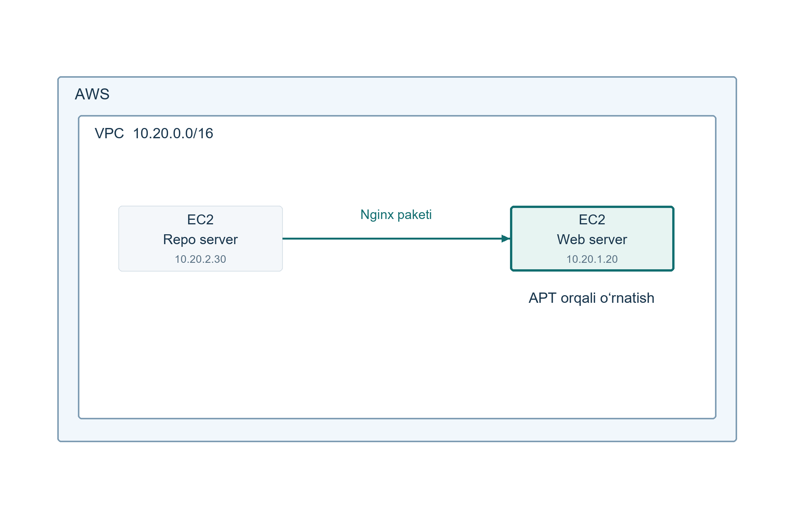
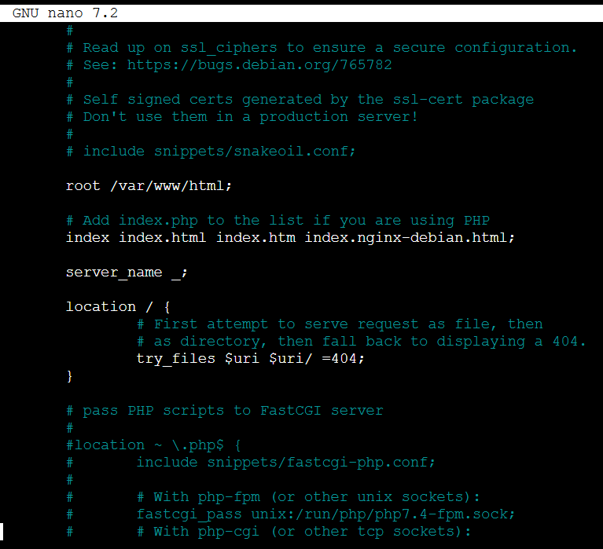
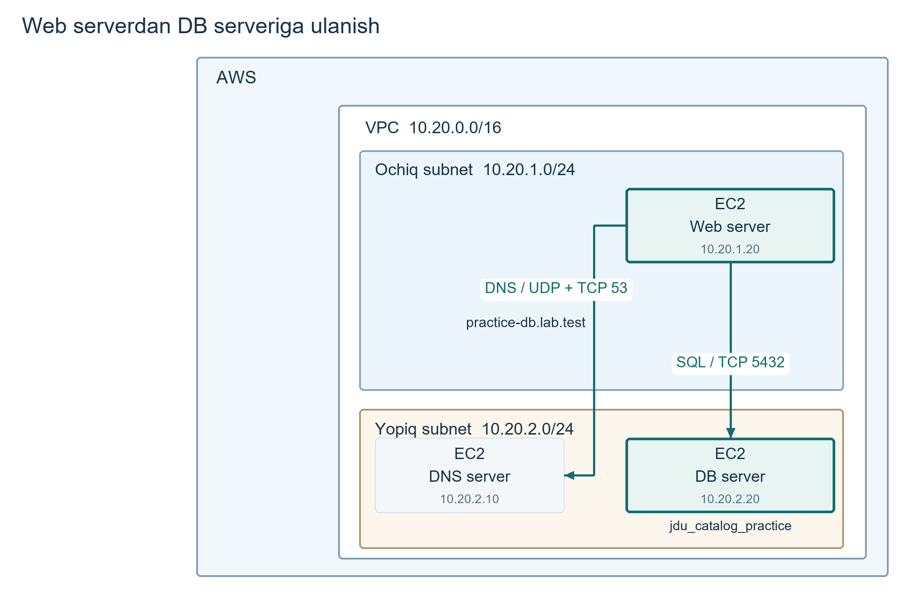
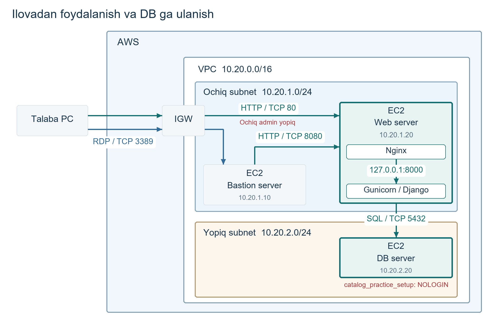

Web Infrastructure: P0-P5 mashqlar va batafsil qadamlar
O‘qituvchi tekshiruvi uchun birinchi nashr. Talabaning qo‘llanma bo‘yicha boshidan oxirigacha o‘tishi hali tekshirilmagan.
Ruscha va o‘zbekcha matn yaponcha asl nusxa bilan bir xil qadam va shartlarga ega. Ona tili mutaxassisi tahriri hali bajarilmagan.
Mashqlar P0–P5 · Topshiriqlar M0–M5
Qo‘llanmadan foydalanish
Avval P topshirig‘ini o‘qing; kerak bo‘lsa batafsil namunani qadam-baqadam bajaring. P - batafsil qadamli mashq. M da boshqa obyekt/qiymatni mustaqil quring. Topshiriq raqami dars raqami emas; o‘z sur’atingizda ishlang. P tugashi M bajarilganini anglatmaydi.
P0 → M0 → P1 → M1 → P2 → M2 → P3 → M3 → P4 → P5 → M4 → M5
P4 uchun ham M2 DNS kerak. P3 da DB ga IP va nom orqali ulanishni mashq qiling. Ilova db.lab.test dan foydalanadi. Practice → mission almashishdan oldin P5 da setup ni tugating.
P0–P5 va M0–M5 vazifalarining barchasi baholanadi. P uchun 60 ball, M uchun 63 ball: jami 123 ball. Shaxsiy namoyish, backup/restore, qo‘shimcha disk va app dasturlash talab qilinmaydi. 25 ballga o‘tkazishni o‘qituvchi alohida qiladi. E’lon qilingan muddatgacha qayta yuborish mumkin. Turli urinish PASS lari qo‘shilmaydi; eng yuqori ball avtomatik tanlanmaydi.
Muhit va tayyorgarlik
Avval boshlang‘ich tarqatma imzosi, yangi beshta server yoki mavjud muhitga install, ichki SSH va shaxsiy ro‘yxatni tugating. Yo‘riqnoma zip dagi distribution/STUDENT.md da. Maxfiy kalitni umumiy Windows ga saqlamang; shaxsiy Academy hisobining CloudShell idan foydalaning. O‘qituvchi anonim Lab ID, fingerprint va muddatni beradi.
Umumiy private IP quyida; public IPv4 doimiy emas. AWS region us-east-1, Ubuntu24.04/amd64. RDP: labuser; SSM: ssm-user; ichki SSH: ubuntu. User nomi va server rolini adashtirmang.
| Role | Private IPv4 | Vazifa |
|---|---|---|
| bastion | 10.20.1.10 | RDP3389 / Firefox / SSH |
| web | 10.20.1.20 | HTTP80 / private8080 / loopback8000 |
| dns | 10.20.2.10 | BIND UDP/TCP53 |
| db | 10.20.2.20 | PostgreSQL5432 |
| repo | 10.20.2.30 | Oldindan saqlangan imzolangan resurslar HTTP80 |
P0 va M0 da Session Manager’ni EC2 ro‘yxatidan oching. Keyingi qadam CloudShell orqali ulanishni so‘rasa, u yerda aws ssm start-session --target i-server-ID ni bajaring. Har ikkala holatda serverda ssm-user sifatida ishlaysiz.
Nano: faylni ochish → matn yozish → Ctrl+O → Enter bilan saqlash → Ctrl+X bilan chiqish. Sozlama bloki shell buyrug‘i emas. Psql ichida prompt o‘zgaradi; SQL/\password shu yerga yoziladi, \q Ubuntu ga qaytaradi. Xatodan keyin natijani tekshirmay davom etmang.
Raqamli izohlar shu qadamdagi tartib va maqsadni bildiradi. # shell, -- psql ichidagi izohdir. Izohni o‘zgartirish shart emas. Ulanish, editor va parol kiritish tugashini kutib, bittadan bajaring. Qatorga bo‘lingan buyruq bitta buyruq bo‘lib qoladi.
Qadamlarni qanday o‘qish kerak
Avval Practice tavsifi va diagrammasini o‘qing, so‘ng qadamlarni qayerda bajarishni tekshiring. Buyruqlarni bittadan bajarib, natijani ko‘ring. Qator oxiridagi teskari qiya chiziq buyruq keyingi qatorda davom etishini bildiradi.
Bash blokini ko‘rsatilgan muhit terminaliga kiriting. Text bloki config matni, psql ichidagi kiritish yoki natija namunasi bo‘lishi mumkin; oldingi izohni o‘qing. # bilan boshlangan izoh comment hisoblanadi. Terminaldagi $ yoki postgres=# prompt ini command ga qo‘shmang. YOUR- qiymatlarini o‘zingiznikiga almashtiring.
Tekshirish tartibi: saqlangan fayl, sintaksis, service ga qo‘llash, haqiqiy ulanish. To‘g‘ri fayl ishlayotgan service yangi sozlamani ishlatayotganini hali isbotlamaydi. HTTP response, DNS answer yoki SQL natijasini log bilan solishtiring.
Tayyor tizim va ulanish yo‘llari
| Manba | Manzil | Protocol / port | Maqsad |
|---|---|---|---|
| Windows PC | Web public IPv4 | TCP/80 | Internet Gateway orqali ochiq ro‘yxat va statik fayllarni ko‘rish. |
| Windows PC | bastion public IPv4 | TCP/3389 | Ruxsatli CIDR dan RDP bilan bastion ish stoliga kirish. |
| bastion | Web/DNS/DB/repo | TCP/22 | Boshqarish uchun ichki SSH; private key bastion ichida qoladi. |
| bastion / Web | DNS 10.20.2.10 | UDP+TCP/53 | lab.test nomlarini yechish. DNS Web sahifa mazmunini qaytarmaydi. |
| Web app | DB 10.20.2.20 | TCP/5432 | App DB role bilan SQL bajaradi. Windows dan DB ga bevosita ulanish ishlatilmaydi. |
| bastion | Web 10.20.1.20 | TCP/8080 | admin.lab.test admin oynasi; ochiq 80 portdan alohida. |
| Nginx on Web | 127.0.0.1 on Web | TCP/8000 | Shu Web ichidagi app ga uzatish; 127.0.0.1 - ayni joriy host. |
Boshlang‘ich SSM CloudShell dan EC2 ga alohida management yo‘lidir. U oddiy Web request yo‘liga qo‘shilmaydi. Jadvaldagi ichki IP va portlar shu Lab uchun, barcha Web tizimlari uchun emas.
P0 Shaxsiy muhit va buyruqlarni bajarish joyi
Nimani o‘rganamiz
EC2 ro‘yxatidan kerakli serverni tanlash, Session Manager orqali ulanish va topshiriq natijasini tekshirish.
Topshiriq
Tayyor muhitingizda beshta serverning instance ID si va rolini tekshiring. Qaysi serverga va qaysi foydalanuvchi sifatida ulanganingizni aniqlang.
Ulaniladigan serverlar

Yashil strelka P0.2 da Web serverga ulanishni ko‘rsatadi.
Practice0 da bajariladigan ishlar
O‘z AWS hisobingizni, har bir server rolini va buyruq bajariladigan muhitni tekshiring.
Yechim namunasi (bajarish tartibi)
P0.1 Beshta serverning instance ID sini tekshirish
Bajarish muhiti:
Talabaning shaxsiy AWS Console oynasi
Maqsad va amallar:
AWS Console tepasidagi Search maydoniga EC2 deb yozib, boshqaruv oynasini oching. EC2 → Instances ro‘yxatida Name ustunidan o‘z muhitingizdagi beshta serverni tekshiring. Shu qatordagi Instance ID ustunidan i- bilan boshlangan to‘liq ID ni ko‘ring.

EC2 dagi Instances ro‘yxati. P0 uchun nomi -web, M0 uchun -db, -dns, -repo va -bastion bilan tugaydigan qatorlarni navbat bilan tanlang.
P0.2 Session Manager orqali Web serverga ulanish
Bajarish muhiti:
Web serverning SSM terminali: ssm-user
Maqsad va amallar:
P0.1 da topilgan Web serverning Instance ID havolasini bosing. Tafsilotlarda Connect yonidagi o‘ng strelkani bosing va Connect with SSM Session Manager ni tanlang. Yangi varaqdagi terminalda quyidagi buyruqlarni bittadan bajaring. Dastlabki sozlashda yaratilgan /etc/jdu-web/bootstrap.json faylini cat bilan ko‘ring va "role": "web" yozuvini toping. Web serverga ulangan bo‘lsangiz, uy katalogida nano bilan tekshiruv faylini yarating.

EC2 tafsilot oynasi. Connect yonidagi o‘ng strelkadan Connect with SSM Session Manager ni tanlang. Rasmda Web server ko‘rsatilgan.
Buyruqlar: raqamlar shu qadam ichidagi tartib
# 1. Shu terminaldagi OS user nomini ko‘rsatish.
id -un
# 2. O‘z uy katalogingizga o‘ting.
cd ~
# 3. Joriy ish katalogini ko‘rsatish.
pwd
# 4. Administrator huquqi bilan /etc/jdu-web/bootstrap.json mazmunini o‘qish.
cat /etc/jdu-web/bootstrap.json
# 5. Faqat web deb yozing. Ctrl+O va Enter bilan saqlang, Ctrl+X bilan chiqing.
nano p0-connection.txt
# 6. Administrator huquqi bilan p0-connection.txt mazmunini o‘qish.
cat p0-connection.txt
Kutilgan natija va ma’nosi:
id -un buyrug‘i ssm-user, pwd esa /home/ssm-user ni ko‘rsatadi. JSON faylda "role": "web" bor va oxirgi cat buyrug‘i faqat bitta web satrini chiqaradi.
P0.3 RDP orqali bastion ish stolini ochish
Bajarish muhiti:
Talabaning Windows PC si (umumiy hisob)
Maqsad va amallar:
Windows dagi Remote Desktop Connection orqali o‘z oraliq serveringizning ish stolini oching.
1. Oraliq serverni tanlang
EC2 → Instances bo‘limida o‘z muhitingizdagi nomi -bastion bilan tugaydigan qatorni toping va shu qatordagi Instance ID ni bosing.

2. Ommaviy IPv4 manzilini nusxalang
Instans tafsilotlarida Public IPv4 address yonidagi nusxalash belgisini bosing. Keyingi qadamda o‘z oynangizdagi joriy ommaviy IPv4 manzilini ishlating. Rasmdagi manzil misol.


Windows+R tugmalarini bosib Run oynasini oching. Open maydoniga mstsc /prompt yozing va OK ni bosing.
Buyruqlar: raqamlar shu qadam ichidagi tartib
# 1. Windows RDP ni hisob ma’lumotlarini so‘rash bilan ochish.
mstsc /prompt
3. Ommaviy IPv4 manzilini kiritib ulaning
Remote Desktop Connection oynasidagi Computer maydoniga 2-qadamda nusxalangan ommaviy IPv4 manzilini qo‘ying va Connect tugmasini bosing.

4. Sertifikat ogohlantirishini tekshiring
Bu oyna chiqsa, ulanish manzilini 2-qadamdagi ommaviy IPv4 manzili bilan solishtiring. O‘qituvchi bu sizning oraliq serveringiz va mashq sertifikati ekanini tasdiqlasa, Yes ni bosing. Tasdiqlanmasa, No ni bosing va o‘qituvchiga murojaat qiling.

5. Oraliq serverga kiring
xrdp kirish oynasida Session maydonida Xorg tanlanganini tekshiring. username maydoniga labuser, password maydoniga dastlab belgilagan RDP parolingizni yozing va OK ni bosing.

6. Ish stoli ochilganini tekshiring
Uzoq ish stoli oynasining yuqori chapida Applications menyusi va Home belgisi ko‘rinsa, oraliq serverga ulangansiz.

Buyruq va sozlamalar ma’nosi:
RDP bastion ekrani va kiritishni uzatadi. RDP ichidagi Firefox request i Windows emas, bastiondan chiqadi. Klaviatura tartibi paroldagi belgilarga ta’sir qiladi; interfeys tili va keyboard layout alohida sozlamadir.
Kutilgan natija va ma’nosi:
Oraliq serverning Ubuntu ish stoli (Xfce) ochiladi. Yuqori chapdagi Applications menyusidan Firefox va boshqa dasturlarni ochish mumkin.
Ishlamasa:
Login failed bo‘lsa user nomi va klaviatura tartibini tekshiring. Parolni chat ga yubormang. Ulanmasa joriy IP va ruxsatli CIDR ni o‘qituvchi bilan tekshiring; 3389 ni hammaga ochmang. RDP ni yopishdan oldin ishni saqlang.
Tekshirish va topshirish
O‘qituvchi bergan baholash manzilini o‘z kompyuteringizdagi brauzerda oching va ta’lim muassasasining Google hisobi bilan kiring. Birinchi kirishda o‘z AWS muhitingizni ro‘yxatdan o‘tkazish bo‘limini tanlang va ekrandagi ko‘rsatmalarga amal qiling.
P0 qatoridagi Ushbu vazifani tekshirish tugmasini bosing. Shu sahifada natijani tekshirib, P0 qatorida 1 / 1 saqlanganiga ishonch hosil qiling.
P1 HTTP orqali statik faylni qaytarish
Nimani o‘rganamiz
Nginx, fayl joyi, tinglash porti, HTTP javobi va access log ni bog‘lash.
Topshiriq
Nginx ni sozlab, /var/www/jdu-practice/practice.txt faylini HTTP orqali tarqating.
Topshiriq diagrammasi

- File: /var/www/jdu-practice/practice.txt
- URL path: /practice.txt
JDU WEB-02 practice: HTTP response verified.
Practice1 da bajariladigan ishlar
Nginx da HTTP uchun TCP 80 portini oching va /practice.txt so‘roviga fayl matnini qaytaring. Web serverning o‘z terminalidan va Bastion terminalidan so‘rov yuboring, so‘ng ularni Nginx access log ida tekshiring.
Yechim namunasi (bajarish tartibi)
P1.1 Ichki APT dan Nginx o‘rnatish
Bajarish muhiti:
Web serverning SSM terminali: ssm-user
Maqsad va amallar:
P0 dagidek Web serverga SSM orqali ulaning. Nginx paketini ichki Repo serveridan (10.20.2.30) yuklab olib, Web serverga o‘rnating.

Buyruqlar: raqamlar shu qadam ichidagi tartib
# 1. Ichki serverdagi paketlar ro‘yxatini yangilash.
sudo apt-get update
# 2. Ichki paket serveridan nginx ni o‘rnatish.
sudo apt-get install nginx
Buyruq va sozlamalar ma’nosi:
apt-get update mavjud paketlar ro‘yxatini yangilaydi. apt-get install nginx shu ro‘yxat yordamida Nginx ni o‘rnatadi.
Kutilgan natija va ma’nosi:
Ro‘yxat yangilanganda ichki server qatorida Hit: yoki Get: ko‘rinadi. N: Ignoring file ... ubuntu.sources.jdu-disabled xabari APT dastlabki sozlashda o‘chirilgan standart Ubuntu manbasi faylini o‘tkazib yuborganini bildiradi. Yuklash yoki imzo tekshiruvida xato bo‘lmasa, o‘rnatishni davom ettiring. Tasdiq so‘ralsa, Y kiriting.
Ishlamasa:
Paketlar ro‘yxatini olib bo‘lmasa, ichki paket serverining holati va IP manzilini tekshiring.
P1.2 Aniq matn yaratish va ruxsatlarni sozlash
Bajarish muhiti:
Web serverning SSM terminali: ssm-user
Maqsad va amallar:
Matnni ish fayliga yozing, keyin uni Nginx fayllarni tarqatadigan katalogga nusxalang.
Buyruqlar: raqamlar shu qadam ichidagi tartib
# 1. O‘z uy katalogingizga o‘ting.
cd ~
# 2. Mashq katalogini yaratish; mavjud bo‘lsa saqlash.
mkdir -p jdu-web-practice/p1
# 3. Ish katalogini jdu-web-practice/p1 ga o‘zgartirish.
cd jdu-web-practice/p1
# 4. Joriy ish katalogini ko‘rsatish.
pwd
# 5. Practice.txt ni ochish: matn yozish, saqlash va chiqish.
nano practice.txt
nano oynasiga yoziladigan matn
JDU WEB-02 practice: HTTP response verified.
nano oynasiga yuqoridagi qatorni aynan yozing va oxirida Enter tugmasini bosing. Ctrl+O va Enter orqali saqlang, Ctrl+X orqali chiqing. Terminalga qaytgach, 6-qadamdan davom eting.
Buyruqlar: raqamlar shu qadam ichidagi tartib
# 6. /var/www/jdu-practice katalogini yaratish.
sudo mkdir -p /var/www/jdu-practice
# 7. Fayllarni /var/www/jdu-practice/practice.txt ga nusxalash.
sudo cp practice.txt /var/www/jdu-practice/practice.txt
# 8. /var/www/jdu-practice/practice.txt egasi va guruhini root:www-data ga o‘zgartirish.
sudo chown root:www-data /var/www/jdu-practice/practice.txt
# 9. /var/www/jdu-practice/practice.txt huquqlarini 0640 ga o‘zgartirish.
sudo chmod 0640 /var/www/jdu-practice/practice.txt
# 10. Ko‘rsatilgan fayl owner, guruh, permission va nomini o‘qish.
stat -c '%U:%G %a %n' /var/www/jdu-practice/practice.txt
# 11. Administrator huquqi bilan /var/www/jdu-practice/practice.txt mazmunini o‘qish.
sudo cat /var/www/jdu-practice/practice.txt
Buyruq va sozlamalar ma’nosi:
chown root:www-data egani root, guruhni www-data qiladi. chmod 0640 egaga o‘qish/yozish, guruhga o‘qish huquqini beradi; boshqalarga ruxsat yo‘q. Nginx worker process lari www-data sifatida ishlaydi va guruh huquqi bilan faylni o‘qiydi.
Kutilgan natija va ma’nosi:
root:www-data 640 /var/www/jdu-practice/practice.txt ko‘rinadi. Matn bitta qator: JDU WEB-02 practice: HTTP response verified..
Ishlamasa:
Nano hali ochiq bo‘lsa, keyingi buyruqdan oldin faylni saqlab chiqing.
P1.3 Nginx da tarqatish katalogini sozlash
Bajarish muhiti:
Web serverning SSM terminali: ssm-user
Maqsad va amallar:
sudo nano /etc/nginx/sites-available/default bilan sozlamani oching. Quyidagi blokni listen 80 mavjud server { ... } ichiga, boshqa location bloklaridan tashqariga qo‘shing. /practice.txt so‘ralganda Nginx yo‘lni root ga qo‘shib, /var/www/jdu-practice/practice.txt ni o‘qiydi. Saqlang, sintaksisni tekshiring va sozlamani qayta yuklang.
Buyruqlar: raqamlar shu qadam ichidagi tartib
# 1. /etc/nginx/sites-available/default faylini nano da tahrirlash.
sudo nano /etc/nginx/sites-available/default
Qo‘shish joyi

nano da location / { ni toping. Ctrl+W orqali location / ni qidirish mumkin. try_files $uri $uri/ =404; qatorini ham, undan keyingi } ni ham o‘chirmang. Bu qavs mavjud location / blokini yopadi. Kursorni shu qavs ostidagi bo‘sh qatorga olib, quyidagi uch qatorni qo‘shing. Ularni try_files bilan yopuvchi qavs orasiga yozmang.
nano da yoziladigan sozlama
location = /practice.txt {
root /var/www/jdu-practice;
}
Qo‘shilgandan keyingi joylashuv (parcha)
Mavjud va yangi bloklar quyidagidek yonma-yon turadi. Ikkalasi ham mavjud server { ... } ichida bo‘ladi. Butun faylni bu misol bilan almashtirmang: boshqa sozlamalar va yuqoridagi root /var/www/html; qatori saqlansin.
location / {
try_files $uri $uri/ =404;
}
location = /practice.txt {
root /var/www/jdu-practice;
}
location = /practice.txt so‘rov yo‘li /practice.txt ga aynan mos kelganda ishlaydi. Faqat shu holatda yangi root ishlatiladi va /var/www/jdu-practice/practice.txt o‘qiladi.
Sozlamani Ctrl+O, Enter bilan saqlang, Ctrl+X bilan chiqing. Terminalda keyingi buyruqlarni bajaring.
Buyruqlar: raqamlar shu qadam ichidagi tartib
# 2. Nginx ning to‘liq sozlamasini chiqarib, qanday yozilganini tekshirish.
sudo nginx -T
# 3. Nginx config sintaksisi va fayllarini tekshirish.
sudo nginx -t
# 4. nginx ni hozir yoqish va avtomatik start ni yoqish.
sudo systemctl enable --now nginx
# 5. nginx ni to‘xtatmay sozlamani qayta o‘qish.
sudo systemctl reload nginx
# 6. nginx joriy ish holatini o‘qish.
systemctl is-active nginx
# 7. Nginx TCP 80 portini, masalan 0.0.0.0:80 manzilida tinglayotganini tekshirish.
sudo ss -lntp
Buyruq va sozlamalar ma’nosi:
Nginx -T config ni ko‘rsatadi; -t sintaksisni tekshiradi. Systemctl enable keyingi boot da ishga tushishni, --now hozir ishga tushishni belgilaydi. Fayl saqlangach reload, service holati va portni tekshiring.
Kutilgan natija va ma’nosi:
Sintaksis tekshiruvida syntax is ok va test is successful, xizmat holatida active chiqadi. Nginx TCP 80 portini, masalan 0.0.0.0:80 manzilida tinglayotganini tekshiring.
Ishlamasa:
Sintaksis xatosida nginx -t ko‘rsatgan fayl va qatorni tuzating.
P1.4 Web ichidan javobni ko‘rish
Bajarish muhiti:
Web serverning SSM terminali: ssm-user
Maqsad va amallar:
Web server terminalida curl bilan HTTP so‘rov yuboring. 127.0.0.1 buyruq bajarilayotgan Web serverning o‘zini bildiradi.

Buyruqlar: raqamlar shu qadam ichidagi tartib
# 1. http://127.0.0.1/practice.txt manziliga HTTP so‘rov yuborish.
curl -i http://127.0.0.1/practice.txt
Buyruq va sozlamalar ma’nosi:
127.0.0.1 - loopback manzili. So‘rov shu Web server ichidagi Nginx ga yetib boradi.
Kutilgan natija va ma’nosi:
HTTP 200 va practice.txt ichidagi JDU WEB-02 practice: HTTP response verified. qatori chiqadi.
Ishlamasa:
«Welcome to nginx» chiqsa, curl buyrug‘ida /practice.txt ko‘rsatilganini tekshiring. http://127.0.0.1/ manzili Nginx bosh sahifasini qaytarishi mumkin.
P1.5 Ayni faylni Bastion serveridan tekshirish
Bajarish muhiti:
Bastionning SSM terminali: ssm-user
Maqsad va amallar:
Bastion serverga SSM orqali ulaning va curl bilan Web serverga HTTP so‘rov yuboring. Ichki tarmoqdan Web serverning ichki IP manzili 10.20.1.20 ni kiriting.

Buyruqlar: raqamlar shu qadam ichidagi tartib
# 1. http://10.20.1.20/practice.txt manziliga HTTP so‘rov yuborish.
curl -i http://10.20.1.20/practice.txt
Buyruq va sozlamalar ma’nosi:
Manzil Web serverning ichki IP siga o‘zgaradi. Fayl yo‘li P1.4 dagidek /practice.txt bo‘lib qoladi.
Kutilgan natija va ma’nosi:
HTTP 200 va JDU WEB-02 practice: HTTP response verified. qatori chiqadi.
P1.6 So‘rovni log bilan bog‘lash va yuborish
Bajarish muhiti:
Web serverning SSM terminali: ssm-user
Maqsad va amallar:
Web ga qayting. Access log da vaqt, client IP, path va statusni ko‘ring. Bu fayl borligidan tashqari so‘rov ishlanganining dalilidir. Exit bilan CloudShell ga qaytgach, PC dagi Web Portal da P1 ni tekshiring.
Buyruqlar: raqamlar shu qadam ichidagi tartib
# 1. Access log oxirgi 20 qatoridan oldingi HTTP so‘rovini topish.
sudo tail -n 20 /var/log/nginx/access.log
# 2. Joriy server session ini yopib CloudShell ga qaytish.
exit
Buyruq va sozlamalar ma’nosi:
Access log dagi vaqt, path va status ni oldingi curl bilan solishtiring. Tail oxirgi qatorlarni o‘qiydi, log ni o‘zgartirmaydi. Exit dan keyin PC brauzerida P1 ni tekshiring.
Kutilgan natija va ma’nosi:
Ekranda sakkizta tekshiruv natijasi va bajarilgan mezonlar soni ko‘rinadi. Tizim ochiq IP orqali HTTP ulanishini avtomatik tekshiradi.
Ishlamasa:
Ishlov davom etsa natijani yangilang. Saqlash xatosida sababni o‘qing. Checker kutgan matnni o‘zgartirmang.
Natijani o‘qish namunasi (kiritmang)
HTTP/1.1 200 OK
JDU WEB-02 practice: HTTP response verified.
Faqat kerakli qatorlar ko‘rsatilgan; haqiqiy javobda boshqa header lar ham bor. 200, matn va access log dagi path/status ni tekshiring.
Tushunishni tekshirish (ballsiz)
Web ichida 200, bastiondan ulanish ishlamaydi. Faylni qayta yozishdan oldin nimani tekshirasiz?
Izoh:
Manzil IP, listen address/port va bastion → Web ruxsatini tekshiring. Fayl mazmuni va yetib borish alohida tekshiruvdir.
P2 Ichki DNS va odatiy nom yechimi
Practice2 da bajariladigan ishlar
Ichki DNS ga Web va DB nomlarini yozing. Bastion va Web ni shu DNS ga sozlab, P1 faylini nom bilan oching.
Topshiriq diagrammasi

Yechim namunasi (bajarish tartibi)
P2.1 Paketlar serveridan BIND o‘rnatish
Bajarish muhiti:
DNS serverning SSM terminali: ssm-user
DNS serverda paketlar ro‘yxatini yangilang va BIND hamda tekshiruv vositalarini o‘rnating. Tahrirdan oldin ikkita faylni nusxalang.
Buyruqlar: raqamlar shu qadam ichidagi tartib
# 1. Ichki serverdagi paketlar ro‘yxatini yangilash.
sudo apt-get update
# 2. Paketlar serveridan bind9 bind9-utils va kerakli bog‘liqliklarni o‘rnatish.
sudo apt-get install --no-install-recommends bind9 bind9-utils
# 3. Asl fayldan nusxa olish; mavjud nusxani ustidan yozmaslik.
sudo cp -an /etc/bind/named.conf.options /etc/bind/named.conf.options.before-p2
# 4. Asl fayldan nusxa olish; mavjud nusxani ustidan yozmaslik.
sudo cp -an /etc/bind/named.conf.local /etc/bind/named.conf.local.before-p2
Kutilgan natija va ma’nosi:
bind9 va bind9-utils o‘rnatiladi va ikkita .before-p2 nusxasi yaratiladi.
P2.2 DNS so‘rovini yubora oladigan serverlarni belgilash
Bajarish muhiti:
DNS serverning SSM terminali: ssm-user
DNS serverning o‘zi, Bastion va Web serverlariga ruxsat bering. Mashq zonasidan tashqaridagi nomlar AWS DNS ga (10.20.0.2) yuboriladi.
Fayl tarkibini quyidagi sozlama bilan almashtiring. nano da Ctrl+W qidiradi, Ctrl+O va Enter saqlaydi, Ctrl+X chiqadi.
sudo nano /etc/bind/named.conf.options
nano da kiritiladigan matn
acl "jdu_clients" { 127.0.0.1; 10.20.1.10; 10.20.1.20; };
options {
directory "/var/cache/bind";
listen-on { 127.0.0.1; 10.20.2.10; };
listen-on-v6 { none; };
allow-query { jdu_clients; };
allow-recursion { jdu_clients; };
allow-query-cache { jdu_clients; };
recursion yes;
forward only;
forwarders { 10.20.0.2; };
dnssec-validation no;
allow-transfer { none; };
};
Kutilgan natija va ma’nosi:
listen-on da DNS serverning ichki IP manzili 10.20.2.10, forwarders da AWS DNS 10.20.0.2 turadi.
P2.3 Nom va IPv4 manzillarini yozish
Bajarish muhiti:
DNS serverning SSM terminali: ssm-user
named.conf.local da BIND ga lab.test zona fayli yo‘lini ko‘rsating. db.lab.test da nomni IPv4 manzili bilan bog‘lovchi A yozuvlarini yozing.
named.conf.local oxiriga blokni qo‘shing. lab.test bloki mavjud bo‘lsa uni tahrirlang.
sudo nano /etc/bind/named.conf.local
nano da kiritiladigan matn
zone "lab.test" {
type primary;
file "/etc/bind/zones/db.lab.test";
allow-transfer { none; };
allow-update { none; };
};
/etc/bind/zones/db.lab.test faylini nano da ochib, quyidagi sozlamani kiriting va saqlang.
sudo mkdir -p /etc/bind/zones
sudo chmod 0755 /etc/bind/zones
sudo nano /etc/bind/zones/db.lab.test
nano da kiritiladigan matn
$TTL 300
@ IN SOA dns.lab.test. hostmaster.lab.test. (
2026102301 3600 600 604800 300 )
@ IN NS dns.lab.test.
dns IN A 10.20.2.10
guide IN A 10.20.1.20
practice-db IN A 10.20.2.20
Kutilgan natija va ma’nosi:
guide.lab.test Web serverning 10.20.1.20, practice-db.lab.test DB serverning 10.20.2.20 manziliga mos keladi.
Ishlamasa:
Zona fayli mavjud bo‘lsa, mavjud nomlarni qoldirib ikkita mashq yozuvini qo‘shing. Yozuvlar o‘zgarganda SOA seriya raqamini oshiring.
P2.4 BIND ni ishga tushirib DNS serverning o‘zidan so‘rash
Bajarish muhiti:
DNS serverning SSM terminali: ssm-user
Sozlama va zona faylini tekshirib BIND ni ishga tushiring. dig DNS so‘rovini yuborib javobni ko‘rsatadi. 127.0.0.1 DNS serverning o‘zini bildiradi.
Buyruqlar: raqamlar shu qadam ichidagi tartib
# 1. BIND config va ulangan zone sintaksisini tekshirish.
sudo named-checkconf -z
# 2. Lab.test zone faylini tekshirish.
sudo named-checkzone lab.test /etc/bind/zones/db.lab.test
# 3. OS yuklanganda named avtomatik ishga tushishini yoqish.
sudo systemctl enable named
# 4. named ni yangi sozlama bilan qayta ishga tushirish.
sudo systemctl restart named
# 5. UDP 53 orqali guide.lab.test ni so‘rab javobini o‘qish.
dig @127.0.0.1 guide.lab.test A
# 6. TCP 53 orqali guide.lab.test ni so‘rab javobini o‘qish.
dig @127.0.0.1 guide.lab.test A +tcp
Kutilgan natija va ma’nosi:
Zona tekshiruvida OK chiqadi. UDP va TCP uchun NOERROR hamda guide.lab.test uchun 10.20.1.20 qaytadi.
Ishlamasa:
Xatoda sudo journalctl -u named -n 30 --no-pager ni o‘qing, sozlamani tuzatib yana tekshiring.
P2.5 BIND ni Bastion va Web serveridan tekshirish
Bajarish muhiti:
Bastion va Web serverlarining SSM terminallari
Buyruqlarni ikkala serverda bajaring. dig dagi @10.20.2.10 faqat shu so‘rov uchun DNS serverni tanlaydi. AXFR zona yozuvlarini to‘liq ko‘chirishni so‘raydi. Unga ruxsat berilmaganini tekshiring.
Buyruqlar: raqamlar shu qadam ichidagi tartib
# 1. UDP 53 orqali guide.lab.test ni so‘rab javobini o‘qish.
dig @10.20.2.10 guide.lab.test A
# 2. TCP 53 orqali practice-db.lab.test ni so‘rab javobini o‘qish.
dig @10.20.2.10 practice-db.lab.test A +tcp
# 3. UDP 53 orqali absent-p2.lab.test ni so‘rab javobini o‘qish.
dig @10.20.2.10 absent-p2.lab.test A
# 4. UDP 53 orqali aws.amazon.com ni so‘rab javobini o‘qish.
dig @10.20.2.10 aws.amazon.com A
# 5. Butun zone uchun AXFR so‘rab aniq rad etilishini tekshirish.
dig @10.20.2.10 lab.test AXFR
Kutilgan natija va ma’nosi:
guide.lab.test uchun 10.20.1.20, practice-db.lab.test uchun 10.20.2.20 chiqadi. Ro‘yxatda yo‘q nom uchun NXDOMAIN, aws.amazon.com uchun IP qaytadi, zona uzatish rad etiladi.
P2.6 Ubuntu OS odatda ishlatadigan DNS ni sozlash
Bajarish muhiti:
Bastion va Web serverlarining SSM terminallari
Bastion va Web serverlarini bittadan sozlang. Brauzer va ilovalar nomni qidirganda Ubuntu ishlatadigan DNS sifatida Netplan da 10.20.2.10 ni belgilang.
Avval tarmoq interfeysi nomini va Netplan fayli nomini toping.
ip -br link
ls /etc/netplan
ens5 va YOUR-NETPLAN-FILE.yaml o‘rniga haqiqiy nomlarni yozing. networkctl status dagi Network File kerakli Netplan faylini topishga yordam beradi.
networkctl status ens5
Quyida mavjud faylni tahrirlash namunasi. O‘z interfeysingiz bo‘limida dhcp4-overrides va nameservers ni qo‘shing yoki tuzating. Interfeys nomi va boshqa sozlamalarni saqlang.
sudo cp -an /etc/netplan/YOUR-NETPLAN-FILE.yaml /etc/netplan/YOUR-NETPLAN-FILE.yaml.before-p2
sudo nano /etc/netplan/YOUR-NETPLAN-FILE.yaml
nano da kiritiladigan matn
network:
version: 2
ethernets:
ens5:
dhcp4: true
dhcp4-overrides:
use-dns: false
nameservers:
addresses: [10.20.2.10]
Kutilgan natija va ma’nosi:
IP manzilni DHCP orqali olishni saqlang. Faqat DNS ni avtomatik olishni o‘chiring va YAML chekinishlarini tekislang.
Ishlamasa:
Bir interface bir necha YAML da bo‘lsa, qiymatlar birlashadi. resolvectl dns da AWS DNS qolsa, tegishli barcha YAML va amaldagi sozlamani tekshiring.
P2.7 DNS sozlamasini qo‘llab sahifani nomi bilan ochish
Bajarish muhiti:
Bastion va Web serverlarining SSM terminallari
Netplan sozlamasini qo‘llang. resolvectl dns da DNS serverni, getent orqali Ubuntu nomni qanday yechishini tekshiring. So‘ng P1 faylini nom bilan oling.
Buyruqlar: raqamlar shu qadam ichidagi tartib
# 1. Netplan YAML dan config yaratib, qo‘llashdan oldin sintaksisni tekshirish.
sudo netplan generate
# 2. Saqlangan netplan sozlamasini tarmoqqa qo‘llash.
sudo netplan apply
# 3. systemd-resolved ni yangi sozlama bilan qayta ishga tushirish.
sudo systemctl restart systemd-resolved
# 4. Odatiy resolver ishlatadigan DNS serverlarni ko‘rsatish.
resolvectl dns
# 5. Odatiy resolver orqali guide.lab.test IPv4 sini olish.
getent ahostsv4 guide.lab.test
# 6. Odatiy resolver orqali practice-db.lab.test IPv4 sini olish.
getent ahostsv4 practice-db.lab.test
# 7. http://guide.lab.test/practice.txt manziliga HTTP so‘rov yuborish.
curl -i http://guide.lab.test/practice.txt
Kutilgan natija va ma’nosi:
resolvectl dns da 10.20.2.10 chiqadi. Nomlar 10.20.1.20 va 10.20.2.20 ga yechiladi. HTTP 200 va JDU WEB-02 practice: HTTP response verified. qaytadi.
Ishlamasa:
dig o‘tib getent o‘tmasa, client resolver ini tekshiring. Firefox dagi DoH o‘chirilgan sozlamani saqlang.
P2.8 Sahifani Bastion brauzerida tekshirish
Bajarish muhiti:
RDP orqali bastiondagi Firefox
P0 dagidek Bastion serveriga RDP orqali ulaning. Uning Firefox brauzerida http://10.20.1.20/practice.txt, keyin http://guide.lab.test/practice.txt ni oching. O‘z kompyuteringizdagi baholash sahifasida P2 ni tekshiring.
Kutilgan natija va ma’nosi:
Ikkala URL da JDU WEB-02 practice: HTTP response verified. ko‘rinadi. Baholash sahifasida P2 ning 13 mezoni chiqadi.
Natijani o‘qish namunasi (kiritmang)
status: NOERROR
guide.lab.test. 300 IN A 10.20.1.20
Dig ning qisqa namunasi: A dan keyin IPv4, 300 esa TTL. So‘rov SERVER i 10.20.2.10 ekanini alohida tekshiring.
P3 PostgreSQL ga autentifikatsiya bilan ulanish
Practice3 da bajariladigan ishlar
DB serverda PostgreSQL ni sozlab, Web serverdan mashq DB siga parol bilan ulaning.
Topshiriq diagrammasi

Yechim namunasi (bajarish tartibi)
P3.1 Paketlar serveridan PostgreSQL o‘rnatish
Bajarish muhiti:
DB serverning SSM terminali: ssm-user
DB serverda PostgreSQL 16 ni o‘rnating. Keyingi qadamlar uchun SQL fayllarini arxivdan chiqaring.
Buyruqlar: raqamlar shu qadam ichidagi tartib
# 1. Ichki serverdagi paketlar ro‘yxatini yangilash.
sudo apt-get update
# 2. Paketlar serveridan postgresql-16 postgresql-client-16 va kerakli bog‘liqliklarni o‘rnatish.
sudo apt-get install --no-install-recommends postgresql-16 postgresql-client-16
# 3. Belgilangan hash ni tekshirib o‘qituvchi app/SQL resurslarini ochish.
sudo python3 -B /var/lib/jdu-web/lesson-resources-r1/offline_assets.py
# 4. PostgreSQL version, cluster, port va holatini o‘qish.
pg_lsclusters
# 5. Postgres sifatida DB sozlamasini o‘qish: SHOW data_directory;
sudo -u postgres psql -X -d postgres -c "SHOW data_directory;"
Kutilgan natija va ma’nosi:
pg_lsclusters da 16 versiya va main klasteri chiqadi. Ma’lumot katalogi /var/lib/postgresql/16/main.
P3.2 PostgreSQL manzili va portini sozlash
Bajarish muhiti:
DB serverning SSM terminali: ssm-user
postgresql.conf da DB serverning ichki IP manzili 10.20.2.20 va 5432-portni belgilang. Parollar uchun SCRAM-SHA-256 ni tanlang.
Kerakli parametrlarni topib, quyidagi qiymatlarni yozing. Qator boshidagi # bo‘lsa, olib tashlang.
sudo cp -an /etc/postgresql/16/main/postgresql.conf /etc/postgresql/16/main/postgresql.conf.before-p4
sudo nano /etc/postgresql/16/main/postgresql.conf
nano da kiritiladigan matn
listen_addresses = '10.20.2.20'
port = 5432
password_encryption = 'scram-sha-256'
Kutilgan natija va ma’nosi:
Uchta parametrni bitta faylga saqlang. Qayta ishga tushirish kirish sozlangach P3.4 da bajariladi.
P3.3 Web serveridan DB ulanishiga ruxsat berish
Bajarish muhiti:
DB serverning SSM terminali: ssm-user
pg_hba.conf da manba, DB va rollarni belgilang. Web serverning 10.20.1.20 ichki manzilidan mashq va topshiriq uchun ko‘rsatilgan DB va rol juftliklariga ruxsat bering.
Ulanish qoidalarini quyidagilar bilan almashtirib, faylni saqlang.
sudo cp -an /etc/postgresql/16/main/pg_hba.conf /etc/postgresql/16/main/pg_hba.conf.before-p4
sudo nano /etc/postgresql/16/main/pg_hba.conf
nano da kiritiladigan matn
local all postgres peer
local all all reject
host jdu_catalog_practice catalog_practice_setup 10.20.1.20/32 scram-sha-256
host jdu_catalog_practice catalog_practice_app 10.20.1.20/32 scram-sha-256
host jdu_catalog catalog_setup 10.20.1.20/32 scram-sha-256
host jdu_catalog catalog_app 10.20.1.20/32 scram-sha-256
host all all 0.0.0.0/0 reject
host all all ::/0 reject
Kutilgan natija va ma’nosi:
PostgreSQL yuqoridan birinchi mos qatorni ishlatadi. Avval ruxsat qatorlari, oxirida qolgan ulanishlar uchun reject turadi.
P3.4 PostgreSQL ni qayta ishga tushirib sozlamani tekshirish
Bajarish muhiti:
DB serverning SSM terminali: ssm-user
Saqlangan parametr va kirish qoidalarini qo‘llash uchun PostgreSQL ni qayta ishga tushiring.
Buyruqlar: raqamlar shu qadam ichidagi tartib
# 1. postgresql@16-main ni yangi sozlama bilan qayta ishga tushirish.
sudo systemctl restart postgresql@16-main
# 2. postgresql@16-main joriy ish holatini o‘qish.
systemctl is-active postgresql@16-main
# 3. PostgreSQL 10.20.2.20:5432 da tinglayotganini tekshirish.
sudo ss -lntp
# 4. Postgres sifatida DB sozlamasini o‘qish: SHOW password_encryption;
sudo -u postgres psql -X -d postgres -c "SHOW password_encryption;"
# 5. HBA xato qatorlarini topish; to‘g‘ri bo‘lsa 0 qator.
sudo -u postgres psql -X -d postgres -c \
"SELECT line_number,error FROM pg_hba_file_rules WHERE error IS NOT NULL;"
Kutilgan natija va ma’nosi:
Xizmat active, manzil va port 10.20.2.20:5432, parol saqlash usuli scram-sha-256, kirish xatolari (0 rows).
P3.5 Mashq DB va ikkita rolini yaratish
Bajarish muhiti:
DB serverning SSM terminali: ssm-user
Tayyor SQL jdu_catalog_practice DB sini yaratadi. catalog_practice_setup jadval tayyorlashga, catalog_practice_app odatiy ishlashga xizmat qiladi. Avval SQL ni ko‘ring, so‘ng psql orqali bajaring.
Buyruqlar: raqamlar shu qadam ichidagi tartib
# 1. Ish katalogini /var/lib/jdu-web/lesson-resources-r1/app ga o‘zgartirish.
cd /var/lib/jdu-web/lesson-resources-r1/app
# 2. Mashq DB role yaratish SQL i ni ko‘rsatish; hali qo‘llamaslik.
python3 -B profile_sql.py --profile practice 01_create_roles.sql
# 3. Mashq DB role yaratish SQL i ni yaratib postgres orqali kerakli DB ga qo‘llash.
python3 -B profile_sql.py --profile practice 01_create_roles.sql | sudo -u postgres \
psql -X -v ON_ERROR_STOP=1 -d postgres
# 4. Mashq DB va schema yaratish SQL i ni yaratib postgres orqali kerakli DB ga qo‘llash.
python3 -B profile_sql.py --profile practice 02_prepare_schema.sql | sudo -u postgres \
psql -X -v ON_ERROR_STOP=1 -d jdu_catalog_practice
Kutilgan natija va ma’nosi:
CREATE ROLE ikki marta, CREATE DATABASE bir marta chiqadi.
Ishlamasa:
already exists oldin bajarilganini anglatishi mumkin. DROP qilmang; \du va \l orqali solishtiring. Pipe o‘ngidagi psql SQL error bermaganini tekshiring.
P3.6 Har bir DB roliga parol belgilash
Bajarish muhiti:
DB serverning SSM terminali: ssm-user
DB serverda psql ni oching. \password ni bittadan bajaring va har rol uchun tanlagan parolni ikki marta kiriting. Belgilar ko‘rinmaydi. Ikkala parol P4 da ham kerak. Kamida 16 belgili turli parollarni tanlang.
Buyruqlar: raqamlar shu qadam ichidagi tartib
# 1. DB OS terminalida postgres sifatida psql ochish; keyingi amallar psql ichida.
sudo -u postgres psql -X -d postgres
Bundan keyin psql ichida kiriting
-- 2. Psql ichida catalog_practice_setup parolini yashirin kiritish.
\password catalog_practice_setup
-- 3. Psql ichida catalog_practice_app parolini yashirin kiritish.
\password catalog_practice_app
-- 4. Psql ichida mashq DB role atribut va huquqlarini tekshirish.
\du catalog_practice_*
-- 5. Psql dan chiqib ayni DB server OS terminaliga qaytish.
\q
Kutilgan natija va ma’nosi:
\du chiqishida catalog_practice_setup va catalog_practice_app ko‘rinadi.
P3.7 Web serveridan mashq DB ga ulanish
Bajarish muhiti:
Web serverning SSM terminali: ssm-user
P0 dagidek Web server uchun Session Manager ni oching. psql da avval DB ichki IP manzilini, keyin P2 dagi practice-db.lab.test nomini kiriting. Har ikki ulanishda P3.6 dagi catalog_practice_app parolini ishlating.
Buyruqlar: raqamlar shu qadam ichidagi tartib
# 1. Paketlar serveridan postgresql-client-16 va kerakli bog‘liqliklarni o‘rnatish.
sudo apt-get install --no-install-recommends postgresql-client-16
# 2. Web dan kerakli DB ga mavjud parol bilan ulanib SELECT natijasini o‘qish.
psql -X -h 10.20.2.20 -U catalog_practice_app -d jdu_catalog_practice -W -c \
'SELECT current_database(),current_user,1 AS value;'
# 3. Odatiy resolver orqali practice-db.lab.test IPv4 sini olish.
getent ahostsv4 practice-db.lab.test
# 4. Web dan kerakli DB ga mavjud parol bilan ulanib SELECT natijasini o‘qish.
psql -X -h practice-db.lab.test -U catalog_practice_app -d jdu_catalog_practice -W -c \
'SELECT current_database(),current_user,1 AS value;'
Kutilgan natija va ma’nosi:
Ikkala ulanishda jdu_catalog_practice DB si, catalog_practice_app roli va 1 qiymati chiqadi.
Ishlamasa:
IP orqali ulanish ishlasa, nom orqali esa ishlamasa, P2 dagi tizim DNS i va mashq DB nomini tekshiring. Autentifikatsiya rad etilsa, manba, DB, rol va parolni tekshiring. Sinash uchun DB ni Internet ga ochmang.
P3.8 Baholash uchun DB parolini Web serverda saqlash
Bajarish muhiti:
Web serverning SSM terminali: ssm-user
Buyruqni bajarib catalog_practice_app parolini ikki marta kiriting. Kiritish yashirin, parol ulanishni tekshirish uchun Web serverdagi himoyalangan faylga yoziladi. O‘z kompyuteringizdagi baholash sahifasida P3 ni tekshiring.
Buyruqlar: raqamlar shu qadam ichidagi tartib
# 1. Mavjud mashq DB parolini yashirin kiritib, faqat Web da saqlash.
sudo python3 -B /var/lib/jdu-web/lesson-resources-r1/database_secret.py --profile \
practice
Kutilgan natija va ma’nosi:
Terminalda D11_EXISTING_DB_PASSWORD_STORED_LOCALLY chiqadi. Baholash sahifasida P3 ning to‘qqiz mezoni ko‘rinadi.
Ishlamasa:
Fayl mavjud bo‘lsa qayta yaratmang. P4 da ayni DB paroli app sozlamasiga kiritiladi. M3 alohida mission DB/rollaridan foydalanadi.
Natijani o‘qish namunasi (kiritmang)
current_database | current_user | value
jdu_catalog_practice | catalog_practice_app | 1
SELECT natijasini o‘qish namunasi; ustun kengligi boshqacha bo‘lishi mumkin. DB, role va value=1 ni tekshiring. Bu table o‘zgartirish huquqini isbotlamaydi.
P4 Berilgan app ni Web va DB bilan bog‘lash
Practice4 da bajariladigan ishlar
Web serverda jihozlar ilovasini ishga tushirib DB ga ulang. Ochiq ro‘yxat va Bastiondan boshqaruvni sozlang.
Topshiriq diagrammasi

Yechim namunasi (bajarish tartibi)
P4.1 DNS ni tekshirish va Python paketlarini tayyorlash
Bajarish muhiti:
Web serverning SSM terminali: ssm-user
Avval Web serverdan DB va boshqaruv sahifasi nomlarini yeching. So‘ng paketlar serveridan Python vositalarini o‘rnating, ilova va Python paketlarini oching.
Buyruqlar: raqamlar shu qadam ichidagi tartib
# 1. Odatiy resolver orqali db.lab.test IPv4 sini olish.
getent ahostsv4 db.lab.test
# 2. Odatiy resolver orqali admin.lab.test IPv4 sini olish.
getent ahostsv4 admin.lab.test
# 3. Paketlar serveridan python3-venv python3-pip va kerakli bog‘liqliklarni o‘rnatish.
sudo apt-get install --no-install-recommends python3-venv python3-pip
# 4. Imzo/hash ni tekshirib app va belgilangan wheel larni tayyorlash.
sudo python3 -B /var/lib/jdu-web/lesson-resources-r1/offline_assets.py --wheels
# 5. /var/lib/jdu-web/lesson-resources-r1/app dagi serverlarni sozlash fayllarini ro‘yxatlash.
ls /var/lib/jdu-web/lesson-resources-r1/app
# 6. /var/lib/jdu-web/lesson-resources-r1/wheels dagi serverlarni sozlash fayllarini ro‘yxatlash.
ls /var/lib/jdu-web/lesson-resources-r1/wheels
Kutilgan natija va ma’nosi:
db.lab.test uchun 10.20.2.20, admin.lab.test uchun 10.20.1.20 chiqadi. Terminalda PUBLIC_APP_RESOURCES_VERIFIED va SIGNED_OFFLINE_WHEELS_READY=7 ko‘rinadi.
P4.2 Ilovani joylab unga alohida Python muhiti yaratish
Bajarish muhiti:
Web serverning SSM terminali: ssm-user
Fayllarni /opt/jdu-catalog/app ga nusxalang. venv orqali ilova muhitini yaratib, tayyor paketlarni o‘rnating. pip tashqi saytga murojaat qilmasdan fayllar xeshlarini tekshiradi.
Buyruqlar: raqamlar shu qadam ichidagi tartib
# 1. /opt/jdu-catalog/app katalogini yaratish.
sudo mkdir -p /opt/jdu-catalog/app
# 2. /opt/jdu-catalog/app egasi va guruhini root:root ga o‘zgartirish.
sudo chown root:root /opt/jdu-catalog/app
# 3. /opt/jdu-catalog/app huquqlarini 0755 ga o‘zgartirish.
sudo chmod 0755 /opt/jdu-catalog/app
# 4. Fayllarni /opt/jdu-catalog/app/ ga nusxalash.
sudo cp -a /var/lib/jdu-web/lesson-resources-r1/app/. /opt/jdu-catalog/app/
# 5. App uchun alohida Python venv yaratish.
sudo python3 -m venv /opt/jdu-catalog/venv
# 6. Python bog‘liqliklarini faqat ichki wheel va lock/hash bilan o‘rnatish.
sudo /opt/jdu-catalog/venv/bin/python -m pip --isolated --no-cache-dir install \
--no-index --find-links=/var/lib/jdu-web/lesson-resources-r1/wheels \
--only-binary=:all: --require-hashes -r \
/var/lib/jdu-web/lesson-resources-r1/requirements.lock
# 7. O‘rnatilgan Python bog‘liqliklari mosligini tekshirish.
sudo /opt/jdu-catalog/venv/bin/python -m pip check
Kutilgan natija va ma’nosi:
Oxirgi pip check natijasida No broken requirements found. chiqadi.
P4.3 Ilovani ishga tushiradigan OS foydalanuvchisini yaratish
Bajarish muhiti:
Web serverning SSM terminali: ssm-user
Web serverda ilovani ishlatuvchi catalog OS foydalanuvchisini yarating. CSS va boshqa fayllar katalogini yaratib, catalog ga yozish huquqini bering.
Buyruqlar: raqamlar shu qadam ichidagi tartib
# 1. App uchun login shell va home siz catalog tizim user ini yaratish.
sudo useradd --system --user-group --home-dir /nonexistent --no-create-home --shell \
/usr/sbin/nologin catalog
# 2. /var/lib/jdu-catalog katalogini yaratish.
sudo mkdir -p /var/lib/jdu-catalog
# 3. /var/lib/jdu-catalog egasi va guruhini root:root ga o‘zgartirish.
sudo chown root:root /var/lib/jdu-catalog
# 4. /var/lib/jdu-catalog huquqlarini 0755 ga o‘zgartirish.
sudo chmod 0755 /var/lib/jdu-catalog
# 5. /var/lib/jdu-catalog/static katalogini yaratish.
sudo mkdir -p /var/lib/jdu-catalog/static
# 6. /var/lib/jdu-catalog/static egasi va guruhini catalog:catalog ga o‘zgartirish.
sudo chown catalog:catalog /var/lib/jdu-catalog/static
# 7. /var/lib/jdu-catalog/static huquqlarini 0755 ga o‘zgartirish.
sudo chmod 0755 /var/lib/jdu-catalog/static
# 8. Catalog user UID, GID va guruhlarini tekshirish.
id catalog
# 9. Catalog user home va login shell ini tekshirish.
getent passwd catalog
Kutilgan natija va ma’nosi:
Natijada catalog foydalanuvchisi va /usr/sbin/nologin ko‘rinadi. /var/lib/jdu-catalog/static egasi va guruhi catalog.
Ishlamasa:
Ruxsat xatosini chmod -R 777 yoki catalog ga sudo berish bilan hal qilmang. Aniq katalog va egasini solishtiring.
P4.4 Ilovaning odatiy DB ulanishini sozlash
Bajarish muhiti:
Web serverning SSM terminali: ssm-user
YOUR-CURRENT-WEB-PUBLIC-IP o‘rniga AWS Console dagi Web serverning joriy ochiq IPv4 manzilini yozing. So‘ralganda P3 dagi catalog_practice_app parolini kiriting. Yaratilgan mashq sozlamasini ilova uchun tanlang. Kiritilgan belgilar ekranda ko‘rinmaydi.
Buyruqlar: raqamlar shu qadam ichidagi tartib
# 1. AWS Console dagi joriy Web public IPv4 ni belgilash.
PUBLIC_WEB_IPV4='YOUR-CURRENT-WEB-PUBLIC-IP'
# 2. Mavjud DB parolini yashirin kiritib, practice runtime config yaratish.
sudo python3 -B /opt/jdu-catalog/app/configuration.py create-runtime --profile \
practice --public-web-ipv4 "$PUBLIC_WEB_IPV4"
# 3. Keyingi ishga tushirish uchun saqlangan mashq profilini tanlash.
sudo python3 -B /opt/jdu-catalog/app/configuration.py activate --profile practice
# 4. Maxfiy qiymatlarni chiqarmay runtime config ni tekshirish.
sudo python3 -B /opt/jdu-catalog/app/configuration.py check --phase runtime
# 5. Ko‘rsatilgan fayl owner, guruh, permission va nomini o‘qish.
sudo stat -c '%U:%G %a %n' /etc/jdu-catalog/app.env
Kutilgan natija va ma’nosi:
CATALOG_ENV_CREATED=practice, CATALOG_PROFILE_ACTIVATED=practice va VALID chiqadi. app.env egasi va guruhi root:root, huquqi 600.
P4.5 Ilova jadvallari va administratorini tayyorlash
Bajarish muhiti:
Web serverning SSM terminali: ssm-user
Vaqtinchalik sozlama yaratishda P3 dagi catalog_practice_setup parolini kiriting. Jadvallar va namunaviy jihozlarni yaratish uchun buyruqlarni bittadan bajaring. Oxirida practice_admin parolini o‘zingiz tanlab kiriting. Kiritilgan belgilar ekranda ko‘rinmaydi.
Buyruqlar: raqamlar shu qadam ichidagi tartib
# 1. Mavjud setup parolini yashirin kiritib, vaqtinchalik config yaratish.
sudo python3 -B /opt/jdu-catalog/app/configuration.py create-setup --profile practice
# 2. Setup rejimida app sozlama xatolarini tekshirish.
sudo /opt/jdu-catalog/venv/bin/python -B /opt/jdu-catalog/app/manage_secure.py \
--phase setup check
# 3. O‘qituvchi migration larini bajarib, kerakli DB jadvallarini yaratish.
sudo /opt/jdu-catalog/venv/bin/python -B /opt/jdu-catalog/app/manage_secure.py \
--phase setup migrate
# 4. Belgilangan boshlang‘ich ma’lumotni mashq DB ga yozish.
sudo /opt/jdu-catalog/venv/bin/python -B /opt/jdu-catalog/app/manage_secure.py \
--phase setup seed_catalog
# 5. App administratorini yaratib parolini yashirin kiritish.
sudo /opt/jdu-catalog/venv/bin/python -B /opt/jdu-catalog/app/manage_secure.py \
--phase setup create_lab_admin
Kutilgan natija va ma’nosi:
11 ta ilova jadvali va uchta namunaviy jihoz yaratiladi. Boshqaruv sahifasiga practice_admin bilan kirasiz.
P4.6 Ilovaning DB roliga kerakli huquqlarni berish
Bajarish muhiti:
DB serverning SSM terminali: ssm-user
DB server uchun Session Manager ni oching. catalog_practice_app roliga mavjud jadvallar bilan ishlash huquqlarini bering. Avval SQL ni ko‘ring, keyingi buyruq bilan uni qo‘llang.
Buyruqlar: raqamlar shu qadam ichidagi tartib
# 1. Ish katalogini /var/lib/jdu-web/lesson-resources-r1/app ga o‘zgartirish.
cd /var/lib/jdu-web/lesson-resources-r1/app
# 2. Runtime uchun kerakli SQL huquqlari SQL i ni ko‘rsatish; hali qo‘llamaslik.
python3 -B profile_sql.py --profile practice 03_runtime_grants.sql
# 3. Runtime uchun kerakli SQL huquqlari SQL i ni yaratib postgres orqali kerakli DB ga qo‘llash.
python3 -B profile_sql.py --profile practice 03_runtime_grants.sql | sudo -u postgres \
psql -X -v ON_ERROR_STOP=1 -d jdu_catalog_practice
Kutilgan natija va ma’nosi:
COMMIT chiqadi. catalog_item jadvalida o‘qish, qo‘shish va o‘zgartirish mumkin.
P4.7 Ilovani systemd xizmati sifatida ishga tushirish
Bajarish muhiti:
Web serverning SSM terminali: ssm-user
Web serverda CSS va boshqa fayllarni Nginx katalogiga yig‘ing. Xizmat ta’rifini /etc/systemd/system ga nusxalab, systemd ga yuklang. enable --now xizmatni hozir ishga tushiradi va OS yuklanganda avtomatik startni sozlaydi.
Buyruqlar: raqamlar shu qadam ichidagi tartib
# 1. Runtime config bilan CSS va static fayllarni tarqatish katalogiga yig‘ish.
sudo /opt/jdu-catalog/venv/bin/python -B /opt/jdu-catalog/app/manage_secure.py \
--phase runtime collectstatic
# 2. Administrator huquqi bilan /opt/jdu-catalog/app/config/jdu-catalog.service mazmunini o‘qish.
cat /opt/jdu-catalog/app/config/jdu-catalog.service
# 3. Fayllarni /etc/systemd/system/jdu-catalog.service ga nusxalash.
sudo cp /opt/jdu-catalog/app/config/jdu-catalog.service \
/etc/systemd/system/jdu-catalog.service
# 4. /etc/systemd/system/jdu-catalog.service egasi va guruhini root:root ga o‘zgartirish.
sudo chown root:root /etc/systemd/system/jdu-catalog.service
# 5. /etc/systemd/system/jdu-catalog.service huquqlarini 0644 ga o‘zgartirish.
sudo chmod 0644 /etc/systemd/system/jdu-catalog.service
# 6. Joylangan systemd unit fayllarini qayta o‘qitish.
sudo systemctl daemon-reload
# 7. jdu-catalog ni hozir yoqish va avtomatik start ni yoqish.
sudo systemctl enable --now jdu-catalog
# 8. jdu-catalog joriy ish holatini o‘qish.
systemctl is-active jdu-catalog
# 9. Gunicorn 127.0.0.1:8000 da tinglayotganini tekshirish.
sudo ss -lntp
Kutilgan natija va ma’nosi:
Xizmat active. Gunicorn shu Web serverdagi Nginx ulanishi uchun 127.0.0.1:8000 da tinglaydi.
Ishlamasa:
Xatoda journalctl -u jdu-catalog ni o‘qing. Env mazmunini log ga qo‘ymang; formatni configuration.py check bilan tekshiring.
P4.8 Nginx ning ochiq va boshqaruv kirishlarini sozlash
Bajarish muhiti:
Web serverning SSM terminali: ssm-user
Sozlamani nusxalang va sites-enabled ichida ramziy havola yarating. Sozlamadan so‘ng 80-port ro‘yxatni, Bastiondan 8080-port boshqaruv sahifasini ochadi. Nginx ilova so‘rovlarini Gunicorn ga yuboradi.
Nusxalangan sozlamada /practice.txt va /mission.txt uchun ikkita location ni quyidagi bloklarga almashtiring. Bu P1 va M1 kataloglarini saqlaydi. Qolgan sozlamalar o‘zgarmasin.
Buyruqlar: raqamlar shu qadam ichidagi tartib
# 1. Administrator huquqi bilan /opt/jdu-catalog/app/config/jdu-catalog.nginx.conf mazmunini o‘qish.
cat /opt/jdu-catalog/app/config/jdu-catalog.nginx.conf
# 2. Fayllarni /etc/nginx/sites-available/jdu-catalog ga nusxalash.
sudo cp /opt/jdu-catalog/app/config/jdu-catalog.nginx.conf \
/etc/nginx/sites-available/jdu-catalog
# 3. /etc/nginx/sites-available/jdu-catalog egasi va guruhini root:root ga o‘zgartirish.
sudo chown root:root /etc/nginx/sites-available/jdu-catalog
# 4. /etc/nginx/sites-available/jdu-catalog huquqlarini 0644 ga o‘zgartirish.
sudo chmod 0644 /etc/nginx/sites-available/jdu-catalog
# 5. Default sayt linkini nusxaga ko‘chirish; mavjud nusxani ustidan yozmaslik.
sudo mv -n /etc/nginx/sites-enabled/default /etc/nginx/default-site.before-p5
# 6. App sayt sozlamasini yoqish uchun link yaratish.
sudo ln -s /etc/nginx/sites-available/jdu-catalog /etc/nginx/sites-enabled/jdu-catalog
# 7. /etc/nginx/sites-available/jdu-catalog faylini nano da tahrirlash.
sudo nano /etc/nginx/sites-available/jdu-catalog
nano da yoziladigan sozlama
location = /practice.txt { root /var/www/jdu-practice; try_files $uri =404; }
location = /mission.txt { root /var/www/jdu-mission; try_files $uri =404; }
Sozlamani Ctrl+O, Enter bilan saqlang, Ctrl+X bilan chiqing. Terminalda keyingi buyruqlarni bajaring.
Buyruqlar: raqamlar shu qadam ichidagi tartib
# 8. Nginx config sintaksisi va fayllarini tekshirish.
sudo nginx -t
# 9. nginx ni to‘xtatmay sozlamani qayta o‘qish.
sudo systemctl reload nginx
# 10. http://127.0.0.1/practice.txt manziliga HTTP so‘rov yuborish.
curl -i http://127.0.0.1/practice.txt
Kutilgan natija va ma’nosi:
nginx -t muvaffaqiyatli. /practice.txt HTTP 200 va JDU WEB-02 practice: HTTP response verified. qaytaradi. Shu usulda http://127.0.0.1/mission.txt ni ochib M1 matnini tekshiring.
P4.9 Boshqaruv sahifasida bittadan ochiq va yopiq jihoz qo‘shish
Bajarish muhiti:
RDP orqali bastiondagi Firefox
Bastion serveriga RDP orqali ulanib, Firefox da http://admin.lab.test:8080/admin/ ni oching. P4.5 dagi parol bilan practice_admin sifatida kiring. «備品» (jihozlar) bo‘limida jadvaldagi ikki yozuvni bittadan qo‘shing. Ochiq yozuv miqdorini o‘zgartirib saqlang, so‘ng 4 ga qaytaring.
| Kod | Nom | Miqdor | Saqlash joyi | Ochiq |
|---|---|---|---|---|
| P5-PUBLIC-001 | Practice keyboard | 4 | Training shelf A | Ha |
| P5-PRIVATE-001 | Practice mouse | 2 | Training shelf B | Yo‘q |
Kutilgan natija va ma’nosi:
Boshqaruv sahifasida P5-PUBLIC-001 va P5-PRIVATE-001 ko‘rinadi. Ochiq ro‘yxatda yangi yozuvlardan P5-PUBLIC-001 chiqadi.
P4.10 Ikkala yozuv DB ga saqlanganini tekshirish
Bajarish muhiti:
Web serverning SSM terminali: ssm-user
Web terminalida psql orqali boshqaruv sahifasida qo‘shilgan ikki yozuvni o‘qing. P3.6 dagi catalog_practice_app parolini ishlating.
Buyruqlar: raqamlar shu qadam ichidagi tartib
# 1. Belgilangan ikki yozuv uchun SELECT ni saqlash; hali DB ga yubormaslik.
QUERY="SELECT code,name,quantity,location,is_public
FROM catalog_item
WHERE code IN ('P5-PUBLIC-001','P5-PRIVATE-001')
ORDER BY code;"
# 2. Web dan kerakli DB ga mavjud parol bilan ulanib SELECT natijasini o‘qish.
psql -X -h db.lab.test -U catalog_practice_app -d jdu_catalog_practice -W -c "$QUERY"
Kutilgan natija va ma’nosi:
P5-PUBLIC-001 miqdori 4, ochiqligi t. P5-PRIVATE-001 miqdori 2, ochiqligi f. Nom va saqlash joyini ham P4.9 jadvali bilan solishtiring.
P4.11 Baholash sahifasida ilova ishini tekshirish
Bajarish muhiti:
Shaxsiy PC brauzeri: Web Portal
O‘z kompyuteringizdan baholash sahifasida P4 ni ochib, funksiya va huquqlarni tekshirishni tanlang. practice_admin parolini kiritib tekshiruvni boshlang. Tekshiruv bitta nazorat yozuvini yaratadi va miqdor o‘zgarishini tekshiradi.
Kutilgan natija va ma’nosi:
P4 ning 13 mezoni chiqadi. Nazorat jihozi boshqaruv sahifasida qoladi.
P5 Eng kam huquq va ochiq kirish chegarasi
Practice5 da bajariladigan ishlar
DB sozlash roliga kirishni yoping. Ilovaning odatiy huquqlar bilan ishlashini va ochiq tomondan boshqaruv hamda sozlamalar yopilganini tekshiring.
Topshiriq diagrammasi

Yechim namunasi (bajarish tartibi)
P5.1 Ilova DB da bajara oladigan amallarni ko‘rish
Bajarish muhiti:
DB serverning SSM terminali: ssm-user
DB terminalida psql ni oching. \du mashq rollari atributlarini, \dp jadval huquqlarini ko‘rsatadi.
Buyruqlar: raqamlar shu qadam ichidagi tartib
# 1. DB OS terminalida postgres sifatida psql ochish; keyingi amallar psql ichida.
sudo -u postgres psql -X -d jdu_catalog_practice
Bundan keyin psql ichida kiriting
-- 2. Psql ichida mashq DB role atribut va huquqlarini tekshirish.
\du catalog_practice_*
-- 3. Psql ichida public schema jadval huquqlarini o‘qish.
\dp public.*
-- 4. Psql dan chiqib ayni DB server OS terminaliga qaytish.
\q
Kutilgan natija va ma’nosi:
catalog_practice_app jihozni o‘qishi, qo‘shishi va o‘zgartirishi mumkin. Jihozni o‘chirish huquqi berilmagan.
P5.2 Boshlang‘ich sozlama uchun DB roli kirishini yopish
Bajarish muhiti:
DB serverning SSM terminali: ssm-user
catalog_practice_setup ochiq qolsa, uning parolini bilgan kishi yuqori huquqlarni ishlatishi mumkin. SQL da NOLOGIN ni topib, uni psql orqali qo‘llang.
Buyruqlar: raqamlar shu qadam ichidagi tartib
# 1. Ish katalogini /var/lib/jdu-web/lesson-resources-r1/app ga o‘zgartirish.
cd /var/lib/jdu-web/lesson-resources-r1/app
# 2. Setup role login ini o‘chirish SQL i ni ko‘rsatish; hali qo‘llamaslik.
python3 -B profile_sql.py --profile practice 04_disable_setup.sql
# 3. Setup role login ini o‘chirish SQL i ni yaratib postgres orqali kerakli DB ga qo‘llash.
python3 -B profile_sql.py --profile practice 04_disable_setup.sql | sudo -u postgres \
psql -X -v ON_ERROR_STOP=1 -d jdu_catalog_practice
Kutilgan natija va ma’nosi:
ALTER ROLE chiqadi. catalog_practice_setup kirishi yopiladi, ilova esa catalog_practice_app bilan ulana oladi.
P5.3 Web serverdagi vaqtinchalik sozlama fayllarini olib tashlash
Bajarish muhiti:
Web serverning SSM terminali: ssm-user
Ikkita vaqtinchalik sozlama faylini o‘chiring. Ilovani to‘xtating, P4 dagi practice sozlamasini tanlang va ilovani ishga tushiring. catalog OS foydalanuvchisi ilova kodiga yoza olmasligini tekshiring.
Buyruqlar: raqamlar shu qadam ichidagi tartib
# 1. Ko‘rsatilgan fayl owner, guruh, permission va nomini o‘qish.
sudo stat -c '%U:%G %a %n' /etc/jdu-catalog/setup.env \
/etc/jdu-catalog/profiles/practice.setup.env
# 2. Tekshirilgan ikkita vaqtinchalik setup maxfiy faylini o‘chirish.
sudo rm -- /etc/jdu-catalog/setup.env /etc/jdu-catalog/profiles/practice.setup.env
# 3. Ko‘rsatilgan fayl owner, guruh, permission va nomini o‘qish.
sudo stat -c '%U:%G %a %n' /etc/jdu-catalog/app.env \
/etc/jdu-catalog/profiles/practice.app.env /etc/jdu-web/db-practice.runtime.env
# 4. Sozlamani tanlashdan oldin jdu-catalog ni to‘xtatish.
sudo systemctl stop jdu-catalog
# 5. Keyingi ishga tushirish uchun saqlangan mashq profilini tanlash.
sudo python3 -B /opt/jdu-catalog/app/configuration.py activate --profile practice
# 6. Maxfiy qiymatlarni chiqarmay runtime config ni tekshirish.
sudo python3 -B /opt/jdu-catalog/app/configuration.py check --phase runtime
# 7. jdu-catalog ni tanlangan sozlama bilan ishga tushirish.
sudo systemctl start jdu-catalog
# 8. jdu-catalog joriy ish holatini o‘qish.
systemctl is-active jdu-catalog
# 9. Catalog foydalanuvchisi yoza oladigan ilova fayl va kataloglarini qidirish.
sudo -u catalog find /opt/jdu-catalog/app -writable -print
Kutilgan natija va ma’nosi:
CATALOG_PROFILE_ACTIVATED=practice va VALID chiqadi. Ilova active holatida bo‘ladi. Oddiy ish fayllari root:root 600. Oxirgi find natija chiqarmaydi.
Ishlamasa:
Boshqa profil faol bo‘lsa, to‘xtang. O‘chirilgan fayllarni qayta o‘chirmang. To‘xtatish, profilni tanlash yoki tekshirishda xato bo‘lsa, ilovani ishga tushirishdan oldin sababini aniqlang.
P5.4 Ochiq 80-portdan nimalar ko‘rinishini tekshirish
Bajarish muhiti:
Bastionning SSM terminali: ssm-user
Bastion terminalidan Web ning 80-portiga HTTP so‘rovlarini yuboring. Ro‘yxat ochilishini, boshqaruv sahifasi va ichki sozlamalar yopiq ekanini tekshiring. Boshqaruv sahifasini RDP orqali Bastion Firefox brauzerida http://admin.lab.test:8080/admin/ bilan oching.
Buyruqlar: raqamlar shu qadam ichidagi tartib
# 1. http://web.lab.test/ ga HTTP yuborib status, header va matnni ko‘rsatish.
curl -i http://web.lab.test/
# 2. http://web.lab.test/admin/ ga HTTP yuborib status, header va matnni ko‘rsatish.
curl -i http://web.lab.test/admin/
# 3. http://web.lab.test/app.env ga HTTP yuborib status, header va matnni ko‘rsatish.
curl -i http://web.lab.test/app.env
# 4. http://web.lab.test/static/app.env ga HTTP yuborib status, header va matnni ko‘rsatish.
curl -i http://web.lab.test/static/app.env
Kutilgan natija va ma’nosi:
Ro‘yxat HTTP 200 qaytaradi. /admin/ va sozlama fayli URL manzillari uchun 403 yoki 404 qaytadi. 8080-portda boshqaruv tizimiga kirish sahifasi chiqadi.
Ishlamasa:
Env matni ko‘rinsa uni ulashmang; o‘qituvchiga aytib ochiq sozlamani tuzating.
P5.5 Baholash sahifasida kirish cheklovlarini tekshirish
Bajarish muhiti:
Shaxsiy PC brauzeri: Web Portal
Baholash sahifasida P5 ni ochib, funksiya va huquqlarni tekshirishni tanlang. practice_admin parolini kiriting. Tekshiruv muvaffaqiyatli kirish va tizimga kirmasdan jihozni qo‘shish yoki o‘zgartirish rad etilishini solishtiradi.
Kutilgan natija va ma’nosi:
P5 ning 16 mezoni natijalari ko‘rinadi.
Davom ettirish va natijalar
Keyingi safar o‘z Lab va ayni besh serverni ishga tushirib, running/SSM Online va joriy public IP ni tekshiring. Web Portal ga maktab Google orqali kirib, M0 tayyorligidan boshlang. Yaratish, kalit va ro‘yxatni har safar takrorlamang. Muddat tugasa o‘qituvchidan yangilashni so‘rang.
Natijalar avtomatik saqlanadi. Ishlov paytida natijani yangilang; baholarni saqlangan baholar bo‘limidan ko‘ring. Nechta band bajarilganini va nimalarni tuzatish kerakligini ko‘ring. UNKNOWN o‘lchab bo‘lmagan holat, muvaffaqiyat yoki tasdiqlangan nol emas. Tekshirilmagan M ning tasdiqlangan ballari saqlanadi. Oxirgi baholanadigan natija olinadi; turli urinish PASS lari qo‘shilmaydi, maksimum avtomatik tanlanmaydi.
Parol/token/cookie/maxfiy kalit/env ni hisobot yoki chat ga yubormang.